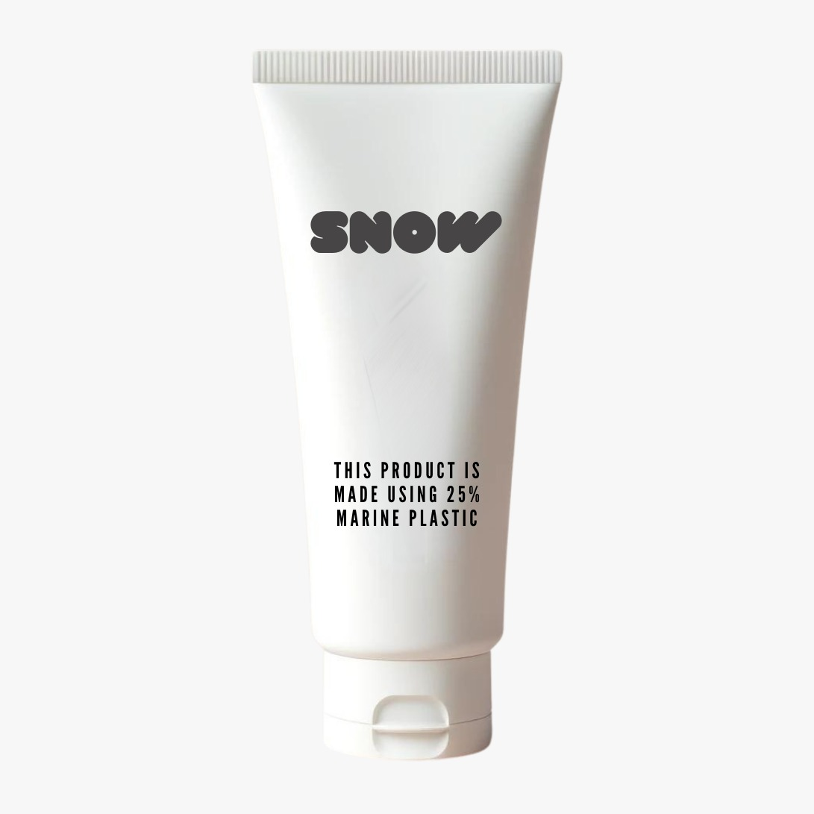

About Snow
Design should be made honest. It should not claim to be something else nor should it appear or suggest to be more than it is.
This statement is taken in the perspective of sustainability and specifically sustainable packaging, material or product with reference to green washing. Green washing take many forms that some may not realize.
- Design should most and for most not lie to the consumers.
- Design should not try to exaggerate its green effect by emphasizing one sustainable change made.
- Design should not be made pruposefully vague in order to imply it is something it is not.
- Design should not simply add green symbols and words to evoke the green sensation.
- Design should not just add sustainable material for the sake of appearing more sustainable.



Green washign is dangeorus as it keeps people from really developing something more sustainable.
- Plastic containers can be swapped out with refillable multi use (cabinet health)
- As a company can end up getting sued (coca cola)
- May lead to over consumption and over waste. People buy more as they feel more sustainable.